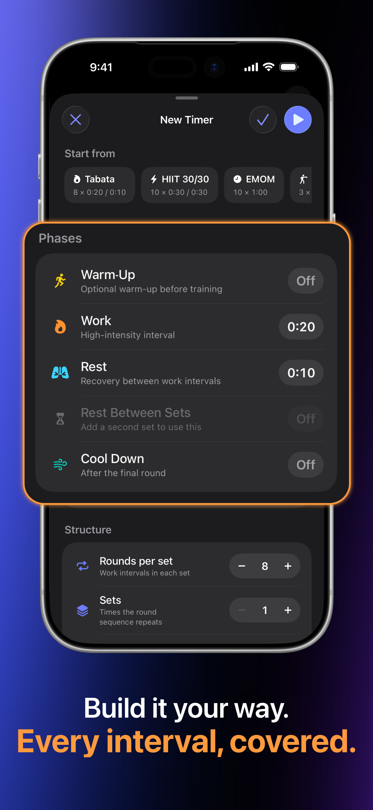
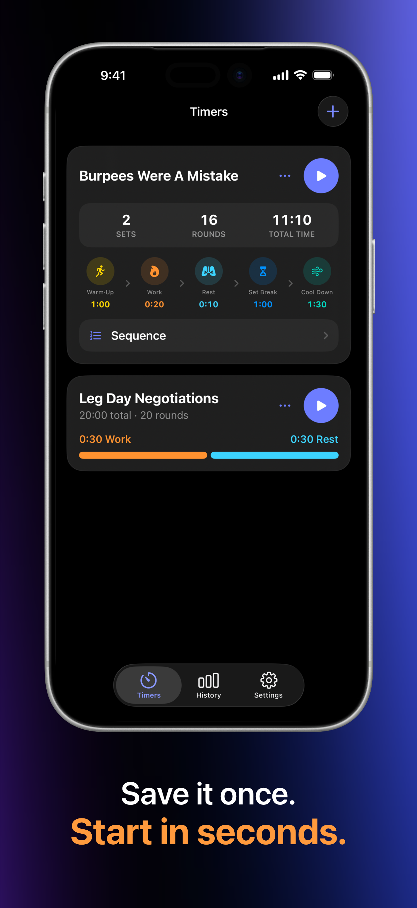
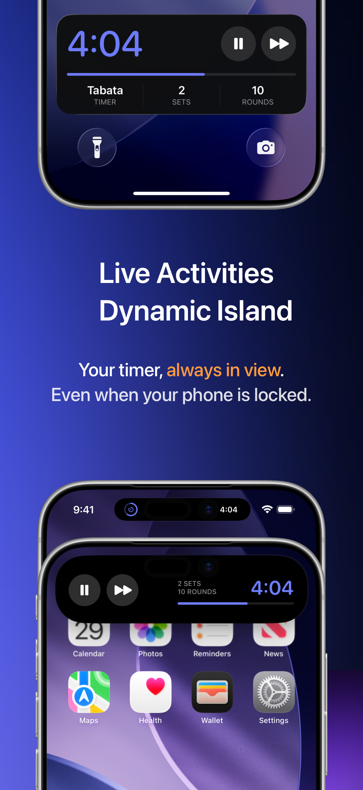
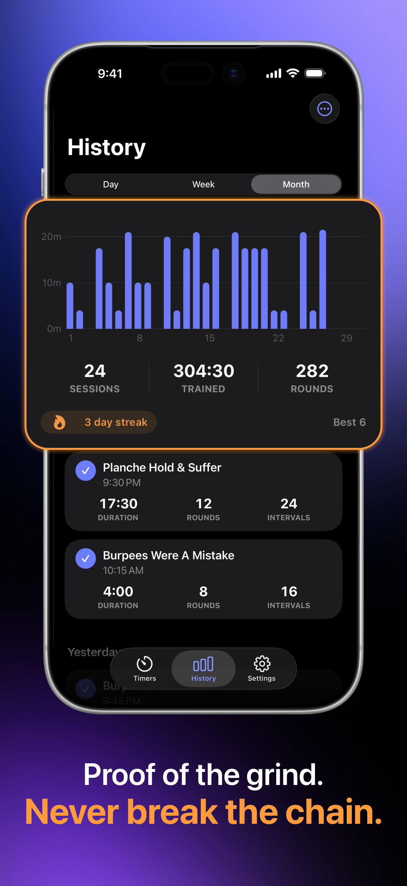
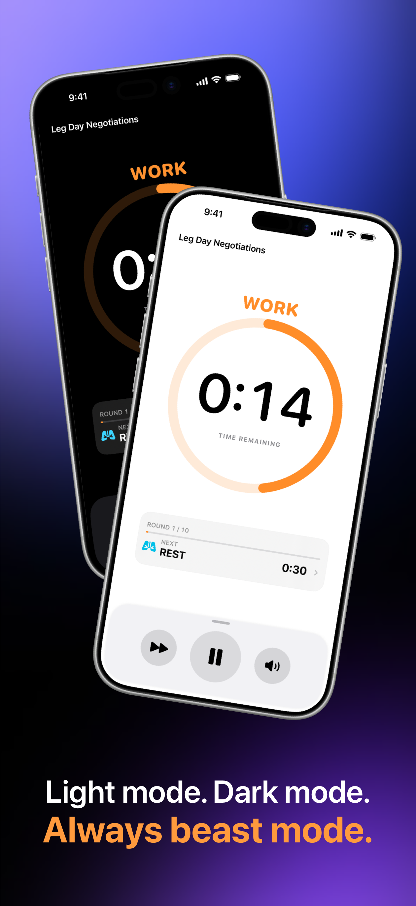

Постройте каждую фазу
Задайте разминку, работу, отдых, перерывы между сетами, заминку, раунды и сеты. Начните с шаблона или соберите сессию полностью под себя.
Соберите тренировку, которую вы действительно выполняете, отложите телефон и позвольте чётким звуковым подсказкам вести каждый раунд.
 Создано спортсменом
Создано спортсменом
Всё, что вам нужно
Достаточно быстрый для четырёхминутной Табаты. Достаточно гибкий для многосетовых кругов, боксёрских раундов, спринтов и вашей собственной структуры тренировки.
Задайте разминку, работу, отдых, перерывы между сетами, заминку, раунды и сеты. Начните с шаблона или соберите сессию полностью под себя.
Свистки, гонги и голосовые подсказки держат вас в ритме, пока экран заблокирован, а ваша музыка продолжает играть.
Live Activities на экране блокировки iOS и Dynamic Island держат вашу тренировку постоянно на виду.
Сохраните свои таймеры один раз, просмотрите полную последовательность, а затем запустите любую программу прямо из библиотеки.
Просматривайте сессии за день, неделю или месяц и следите за временем тренировок, завершёнными раундами и сериями тренировок.
Ваши таймеры, настройки и история тренировок остаются на вашем устройстве. Никакого обязательного аккаунта, никакой рекламы, ничего лишнего.
Внутри FourEver Timer
Яркие цвета фаз, прогресс с первого взгляда и сосредоточенные элементы управления делают таймер лёгким для чтения, не отрывая вас от сессии.





Другие приложения и утилиты
Инструменты, созданные с тем же фокусом на производительность, пользу и контроль пользователя.
Независимое управление направлением прокрутки и ускорением мыши для macOS. Мгновенно переключайтесь между стандартным ускорением указателя для работы и сырым линейным отслеживанием 1:1 для игр, меняя направление прокрутки физического колёсика мыши без влияния на жесты трекпада.